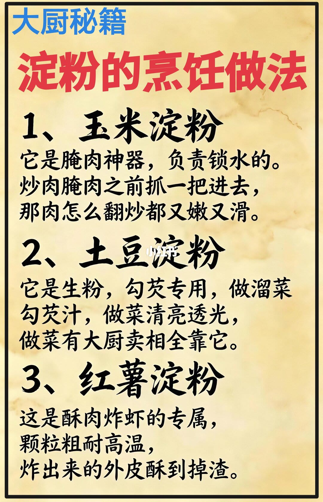

图文实录 · 小红书 · 六边形Hexagon📖
淀粉的烹饪做法❶属于你的食谱吧｜附做法
笔记正文几乎只有话题标签。一张图把玉米淀粉、土豆淀粉、红薯淀粉拆成三件不同的事：锁水、勾芡、炸衣。
1/1
三种淀粉，三种活
图题是「大厨秘籍 · 淀粉的烹饪做法」。玉米淀粉被写成腌肉锁水：炒或腌之前抓一把，肉不容易柴。土豆淀粉被标成生粉，用来勾芡，溜菜时芡汁更透。红薯淀粉颗粒粗、耐高温，图上把它留给酥肉和炸虾，炸出来的壳更脆。

汇总
先问这勺淀粉要干什么
这张图的用法是按任务选淀粉，不是三种可以互相替代。它没有写用量、水温或品牌。勾芡写的是土豆淀粉，炸衣写的是红薯淀粉；家里只有玉米淀粉时，这页没有给出替代比例。